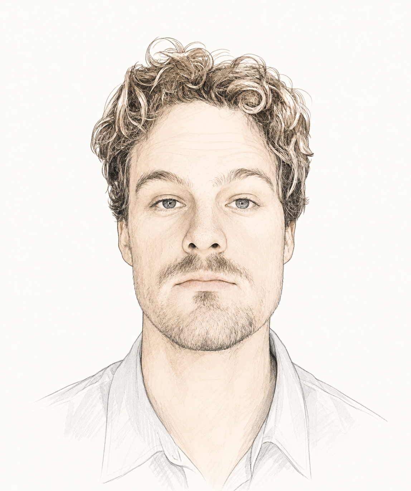

hugo andersson
I'm a first-year PhD Fellow in Human-Centered Computing at Aarhus University, advised by Niklas Elmqvist. My background is in cognitive science, and I now work across HCI, AI, and design research.
So far my PhD has taken me through creativity tools, collective knowledge systems, and agentic simulations — different entry points into the same question: what changes when AI becomes part of how people think, create, and collaborate?
Papers
- Tessera: Faceted Exploration of Collective Knowledge for Collaborative Ideation
- TombWriter: Scaffolding Story Archeology through Beat-Level Interaction in Human-AI Co-Writing
- Material for Thought: AI as Creative Medium, Not Tool
- From Role to Person: Trust Calibration Challenges in Twin Agents
Education
- 2025–PhD Fellow, Aarhus University
- 2023–25MSc Human-Centered AI, University of Gothenburg
- 2022–23Adjunct in HCI, University of Gothenburg
- 2019–22BSc Cognitive Science, University of Gothenburg